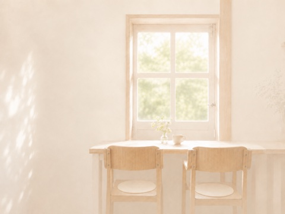
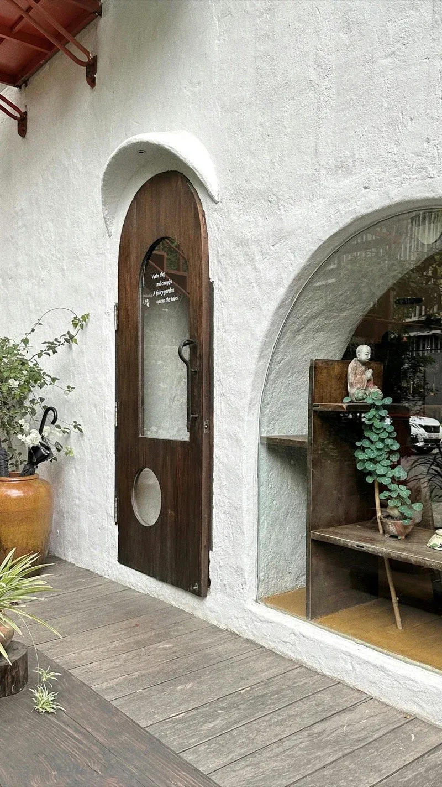

SUMMER FIKA STAND
RO FIKA
ひとりの午後に、 光る小さな休憩。
cold drinks, baked sweets, and a window full of light.

Concept
コンセプト
光の入る窓辺で、ひと息。
冷たい飲みものと、焼き菓子をそばに。
45分だけ、スマホを伏せて。
ひとりで過ごす午後の、小さな習慣。
a window full of light.
Fika Time
窓辺で、ひと息。
冷たいものを、そばに。
甘いものを、少し。
窓の光を、眺めて。
静かな時間へ。
a quiet rhythm for a summer afternoon.
Gallery
窓辺に残る、小さな景色

Info
RO FIKA
窓辺で、少しだけひと息。
ひとり席あり / 予約不要
- Open
- 12:00 – 18:00
- Close
- Wednesday
- Place
- 窓辺のある小さな通り（架空の設定）
- Seats
- 12席ほど / ひとり席あり
- Payment
- Cash / Cashless
本日の焼き上がり・空席は Instagram へ
@rofika（コンセプト）